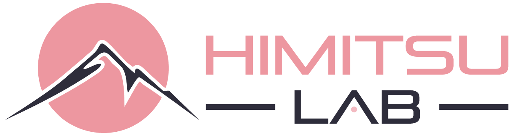

EN
ホーム
解決志向
トラック＆トレース
我々について
将来のソリューションを構築する
お問い合わせ
将来のソリューションをどのように構築するか？
Himitsu Labは、発想して、育んで、革新的なデジタルソリューションを推進するチームを支援します。
新しいビジネスを構築するためのステップ（手順）とは：
ステップ１考案、ステップ２開発、ステップ３検証、ステップ４構築、ステップ５拡張。
技術革新は、時として特定の業務を想定する前段階で発想される事がしばしばあります。コンセプト考案の段階では、技術革新のための潜在的な適用事例を評価します。 どこで使えるのか？ 誰にこの付加価値を提供できるのか？ それらのビジネス命題を解決できる複数の適用事例を検証していきます。製品は何か、お客様は誰か、そしてなぜ導入す るのかといったことを定義することが、私たちのステートメントになります。
開発段階とは、潜在顧客と直接会話し、彼らの抱える問題とニーズについて学習することです。
この段階では、技術革新については話すことはありません。議論が技術に偏ることを避けるために、顧客が置かれているビジネス環境を学習し潜在的なニーズにフォーカスします。 このようなブレインストーミングを通じて、市場の真の課題がどこにあるかを発見し、仮説が実際の顧客体験と一致しているかどうか検証します。
このようなヒアリングを通じて、現状の問題点と説得力のあるビジネスモデルに対する理解を深めたり、時にはホワイトボードに戻り構想の修正を行います。
この段階では、最初のプロトタイプを試作し、概念実証（Proof of Concept:以下PoC）を実施して我々の販売プロセスをテストします。 ここでのアイデアは、PoCのテストで顧客が試行し、PoCがうまくいけば顧客が購入するかどうか検証します。もしPoCの成功を立証できない場合は、 ビジネスモデルを再検討するとともにコンセプト考案の段階に戻ります。
顧客の状況について深く理解し、このPoCが成功した場合、今後の市場投入に必要最低限の機能を持つ基本ソリューションの構築へと移ります。 その次に新しいテクノロジー導入に積極的な先進企業が、製品またはサービスを使ってもらえるよう働きかけます。そして、複数の顧客企業が実証実験で成果を上げられるようになると、 そのビジネスモデルは再販可能であるという確証を得ることになります。この段階を経て、資金調達に値すると考え、スタートアップ企業として独立できる可能性が高いと判断します。
この段階では、スタートアップ事業の拡大とベンチャーキャピタルからの最初の資金調達を計画します。そしてこの計画に必要な事は、完全なマネジメントチームを編成し、 すでに実証済みのビジネスモデルの実行に集中することです。